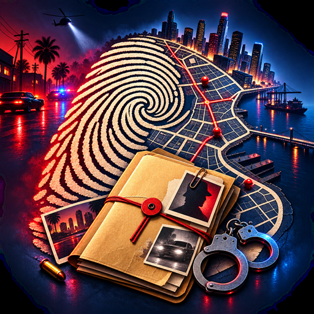

Rap Sheet
A life simulator in text. One life, start to finish, every choice on it a crime.
One life, start to finish, and every choice on it is a crime. This is a text life simulator. You are born, you age one year at a time, and the file gets longer until you die or the sentence outlasts you. Each year two to four things happen and you choose how you answer, then you act from a menu that grows as you do: a job, a hustle, a person, a crime. Everything you did that year rolls against the police, and the answer is nothing, a stop, a charge or a warrant. If you are charged there is a lawyer, a plea, a trial and a sentence. One run is thirty to fifty minutes. Heat is the clock, and heat is what ends the run.
Get it on Google PlayScreenshots //
Dev log //
- Rap Sheet: the skeleton and the simulation
The 1 most recent changes worth reading, out of 4 commits.
Every line above is a real commit from this app's repository, on the date it was made. Build chores, merges and internal housekeeping are filtered out.